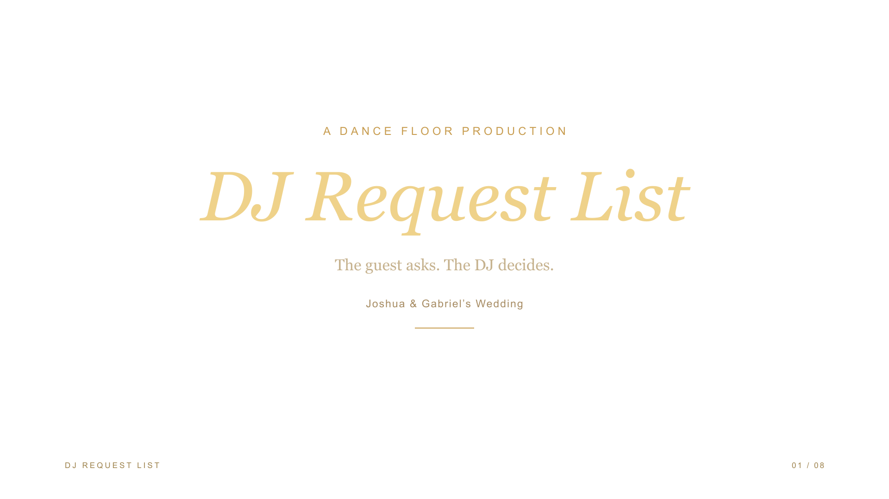
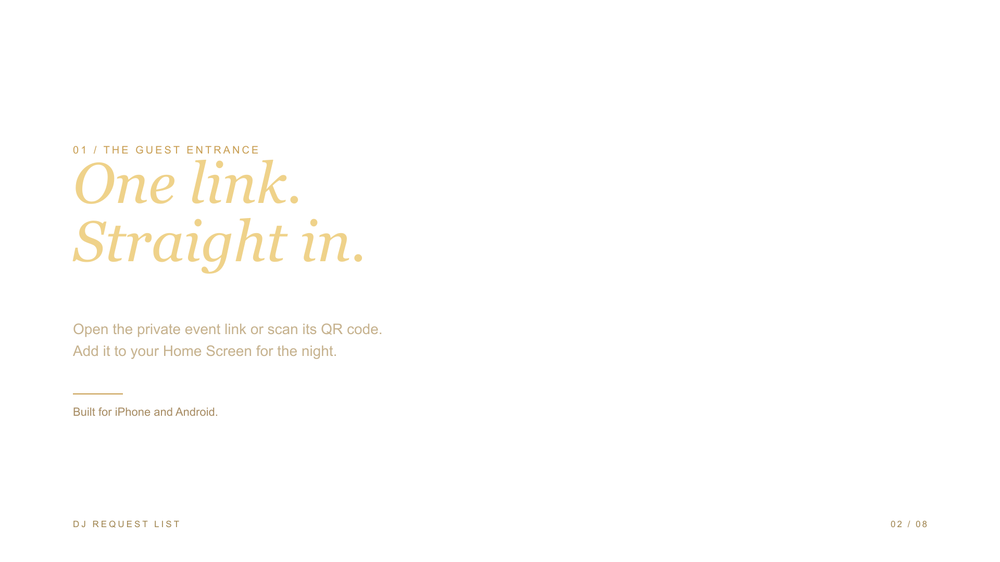
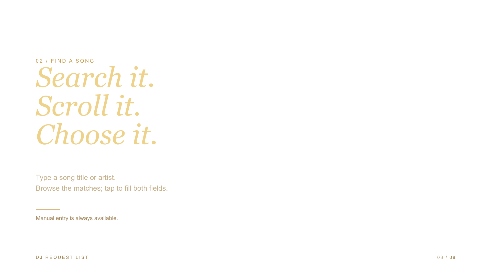
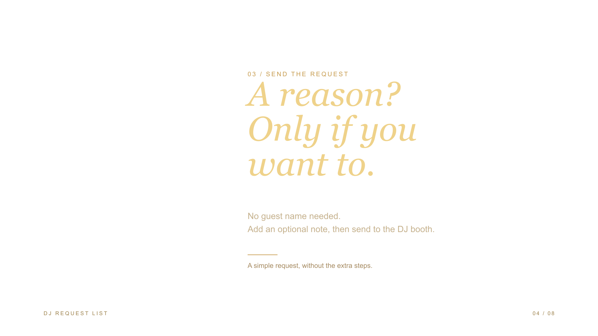
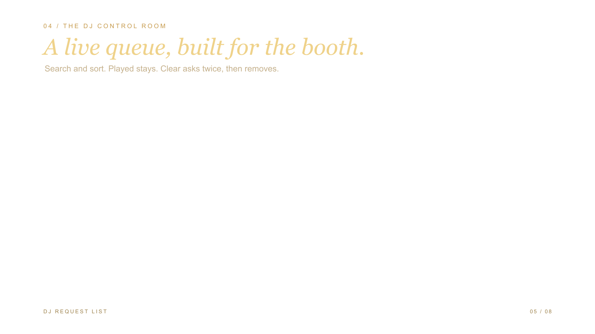
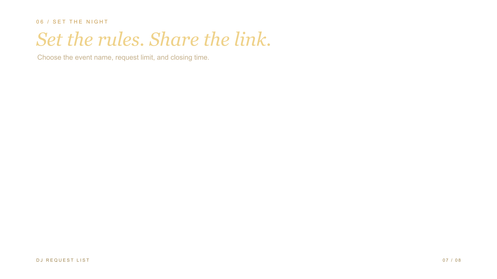
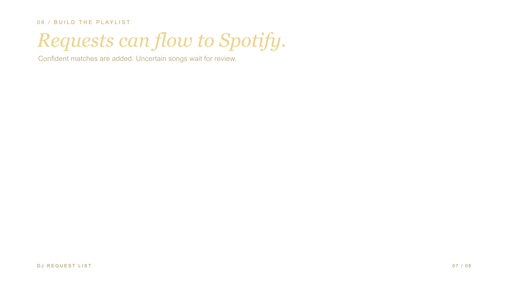
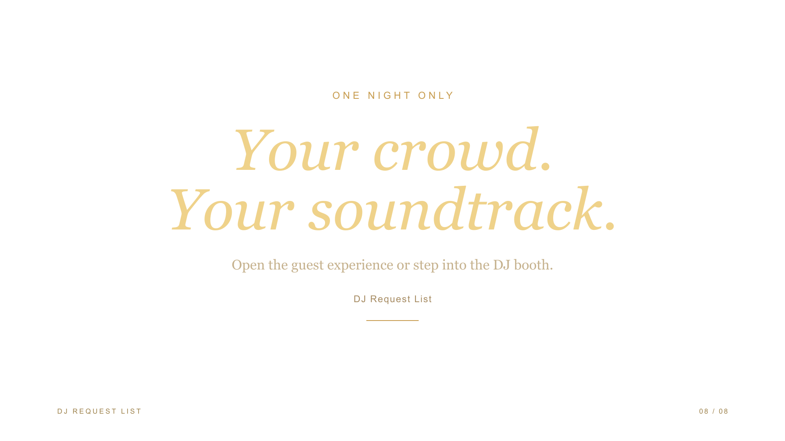

PIN protected · Automatic refresh · Laptop-friendly spacing
Private link and QR · Home Screen access · Change the admin PIN
Guests do not need Spotify · Played and Clear never remove playlist songs